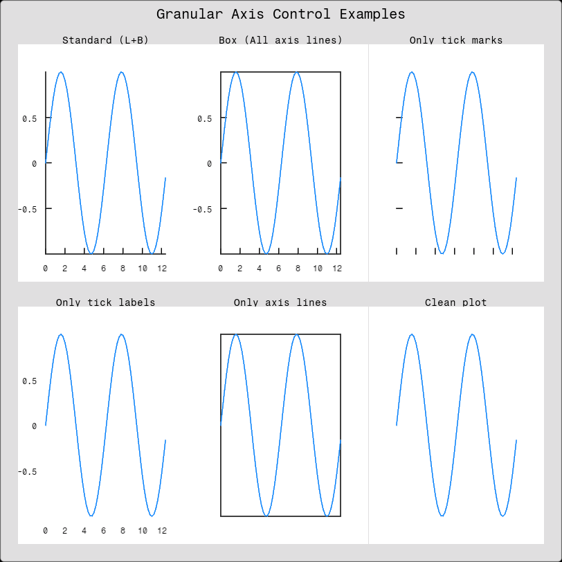

PlotStyle
The PlotStyle struct provides control over the visual appearance of plots.
Overview
PlotStyle allows you to customize:
- Background and grid colors
- Individual axis line visibility (left, right, top, bottom)
- Tick mark visibility (x and y axes independently)
- Tick label visibility (x and y axes independently)
- Grid appearance
- Anti-aliasing settings
Example: Granular Axis Control
This example demonstrates the flexibility of the granular axis control system:
using Fugl
using Fugl: Text
function axis_control_demo()
# Create sample data
x_data = Float32.(0:0.2:4π)
y_data = Float32.(sin.(x_data))
line_element = LinePlotElement(y_data, x_data=x_data, color=Vec4{Float32}(0.0, 0.5, 1.0, 1.0))
# Demonstrate granular axis control options
plots = [
# 1. Standard plot (left and bottom axes only)
Plot([line_element], PlotStyle(
show_grid=false,
show_left_axis=true,
show_right_axis=false,
show_top_axis=false,
show_bottom_axis=true,
show_x_tick_marks=true,
show_y_tick_marks=true,
show_x_tick_labels=true,
show_y_tick_labels=true
)),
# 2. Box plot (all four axis lines)
Plot([line_element], PlotStyle(
show_grid=false,
show_left_axis=true,
show_right_axis=true,
show_top_axis=true,
show_bottom_axis=true,
show_x_tick_marks=true,
show_y_tick_marks=true,
show_x_tick_labels=true,
show_y_tick_labels=true
)),
# 3. Only tick marks (no axis lines, no labels)
Plot([line_element], PlotStyle(
show_grid=false,
show_left_axis=false,
show_right_axis=false,
show_top_axis=false,
show_bottom_axis=false,
show_x_tick_marks=true,
show_y_tick_marks=true,
show_x_tick_labels=false,
show_y_tick_labels=false
)),
# 4. Only tick labels (no axis lines, no tick marks)
Plot([line_element], PlotStyle(
show_grid=false,
show_left_axis=false,
show_right_axis=false,
show_top_axis=false,
show_bottom_axis=false,
show_x_tick_marks=false,
show_y_tick_marks=false,
show_x_tick_labels=true,
show_y_tick_labels=true
)),
# 5. Only axis lines (no tick marks, no labels)
Plot([line_element], PlotStyle(
show_grid=false,
show_left_axis=true,
show_right_axis=true,
show_top_axis=true,
show_bottom_axis=true,
show_x_tick_marks=false,
show_y_tick_marks=false,
show_x_tick_labels=false,
show_y_tick_labels=false
)),
# 6. Clean plot (nothing)
Plot([line_element], PlotStyle(
show_grid=false,
show_left_axis=false,
show_right_axis=false,
show_top_axis=false,
show_bottom_axis=false,
show_x_tick_marks=false,
show_y_tick_marks=false,
show_x_tick_labels=false,
show_y_tick_labels=false
))
]
labels = [
"Standard (L+B)",
"Box (All axis lines)",
"Only tick marks",
"Only tick labels",
"Only axis lines",
"Clean plot"
]
# Create rows of plots
rows = AbstractView[]
for i in 1:2
row_plots = AbstractView[]
for j in 1:3
idx = (i - 1) * 3 + j
if idx <= length(plots)
push!(row_plots, IntrinsicColumn([
IntrinsicHeight(Text(labels[idx], style=TextStyle(size_px=14))),
plots[idx]
], spacing=0.0))
end
end
push!(rows, Row(row_plots, spacing=0.0))
end
ui = Container(
IntrinsicColumn([
IntrinsicHeight(Text("Granular Axis Control Examples", style=TextStyle(size_px=20))),
Column(rows, spacing=0.0)
], spacing=0.0, padding=0.0)
)
return ui
end
# Run the demo
screenshot(axis_control_demo, "AxisControlDemo.png", 812, 812);